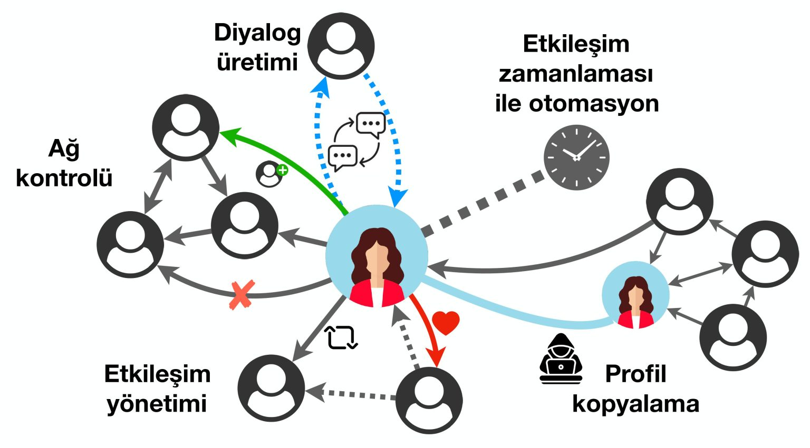

Sosyal botlar ve dezenformasyon kampanyaları nedir?
Yazının orjinaline Sarkaç websayfasıdan erişebilirsiniz. (Onur Varol - 2023/01/23)Sosyal botlar ve dezenformasyon kampanyaları nedir?
Dezenformasyonu finansal veya siyasi güç elde etmek amacıyla kullanmak isteyen aktörler kendilerine sosyal ağları bir platform olarak seçiyor; sosyal botları ve manipüle edilmiş diğer kullanıcıları birer araç olarak kullanıyor.
Türkiye’de 1990’lı yıllarda hayatımıza giren İnternet, özellikle sosyal ağların da ortaya çıkmasıyla farklı yaş gruplarından milyonlarca kullanıcıyı çevrimiçi olarak bir araya getiriyor. Bu platformlar üzerinde yeni arkadaşlıklar, ortak ilgi alanları ve beğeniler üzerinden kuruluyor ve sosyal medyanın eş zamanlı yapısı nedeniyle acil durumlarda bilgi almak için ilk başvurulan kaynak olarak kullanılıyor. Örnek vermek gerekirse bir deprem durumunda saniyeler içerisinde trend olan #deprem hashtag’i ile Kandilli Rasathanesi’nin ve diğer ölçüm merkezlerinin bot hesapları otomatik içerik üretiyor, hissedilen depreme dair kullanıcılar tarafından da paylaşımlar yapılıyor. Benzer şekilde siyaset ve futbol da sosyal ağlarda büyük miktarda içeriğin üretildiği konular. Sosyal ağlar gerçekleşen olayların neredeyse gerçek zamanlı takip edilmesinde önemli bir rol üstleniyor.
Sosyal medyanın bilgiye ulaşmada bu kadar merkezi bir rol alması, bu platformların kötü amaçlar için kullanılmasına da sebep oluyor. Örneğin sosyal ağlarda isminin önüne gerçek olmayan unvanlar ekleyen kişilerin toplum sağlığını tehlikeye atacak yanlış bilgiler yaymasının, özenli gazetecilik ilkelerinden yoksun olan kurumların kaynak doğrulama ve araştırma yapmaksızın haberler paylaşmasının ve toplumu ayrıştırıcı dil kullanan hesapların içeriklerinin platformda hızlıca yayılarak kullanıcıların fikir ve davranışlarını manipüle etmesinin örneklerini pandemi döneminde de gözlemledik. Sosyal medyanın olaylarla eş zamanlı olarak içerik üretilmesine ve bu içeriğin hızlıca yayılmasına olanak sağlaması kolayca kötüye kullanılabiliyor.
Sosyal ağlarda mesajlarını beğendiğimiz, yorum yazdığımız ve takip ettiğimiz hesapların da bizler gibi gerçek sosyal medya kullanıcıları olduğunu düşünmemiz doğal. Oysa bazı hesapların diğerlerinden daha görünür olması, başkaları tarafından beğenilmesi veya sıklıkla içerik üretmesi doğal yollarla gerçekleşmiyor olabilir.[1] Bu hesapların “başarısının” altında hesabın özelliklerinin ötesinde platformlardaki yanlılıklar, sosyal ağınızın yapısı veya yazılımlar ile desteklenen otomatik faaliyetler bulunabilir.
Sosyal ağlardaki etkili iletişime ve güvenirliliğe de zarar veren farklı hesap tipleri ve bunlara verilen isimler var. Sosyal ağlarda alışılagelmiş kullanıcıların haricinde davranışları otomasyon ile kontrol edilen hesaplara sosyal botlar deniyor ve burada otomasyon faaliyetleri bu hesapları ayırt eden faktör. Bir amaç için motive edilmiş insan kontrolünde veya kısmen otomasyon kullanan trol hesaplar ve çorap kuklası (sock puppet) da denilen hesap tipleri bir diğer grubu temsil ediyor.[2] Bu tür hesapların davranışları sosyal ağlarda normal insan davranışlarında gözlemlenen örüntülerden farklılık gösteriyor. Medya okur yazarlığı ile bu hesapları tespit etmek bir noktaya kadar mümkün ancak sistematik olarak gerçeklesen bazı davranışların belirlenmesinde makine öğrenmesi yaklaşımları daha hızlı ve tutarlı sonuç üretiyor.
Sosyal botlar nasıl tespit edilir?
Sosyal botların tespit edilmesinde davranışlarına, ürettikleri içeriklere ve platformdaki diğer hesaplarla etkileşimlerine bakılarak çıkarım yapılması mümkün. Hesaplarda şüpheli görülen bu işaretler bot türlerine göre farklılık gösteriyor. Örneğin ticari amaçla bir ürün satmaya çalışan, farklı hesapları etiketleyerek ve linkler paylaşarak dikkat çekmeye çalışan hesaplarda, içeriklerin benzerliği veya takipçisi olmayan hesaplarla etkileşime girmesi bir belirteç olabilir. Siyasi alanda kullanılan dil, mesaj sıklığı, benzer içeriklerin başka hesaplar tarafından da paylaşılıp paylaşılmadığı da belirteç olarak alınabilir. Yani kısaca hesapların amaçları, etkilemeye çalıştıkları gruplar ve kullandıkları teknolojiler bot tespitinde belirleyici olan unsurlar.
Bir sosyal medya kullanıcısının erişiminde olan aşağıdaki profil özelliklerinin incelenmesi kişilere bu hesap hakkında sınırlı da olsa bir fikir verebilir.
Takipçi ve arkadaş sayısı ile bunların birbirine olan oranı: Sosyal ağlarda popüler hesaplar daha az sayıda hesabı geri takip eder. Normal kullanıcılar içinse bu sayılar birbirine oldukça yakındır. Ciddi miktarda ve birbiriyle alakasız hesabın takip edildiği kullanıcılar daha özenli incelenmelidir.
Mesaj atma sıklığı ve içeriklerin kendi içinde benzerliği: Normal kullanıcılar genelde birbirine benzer içerik üretmezler. Bir gün içinde yüzlerce içerik üretilmesi de şüphelidir.
Profil resminin kullanıcının ismi, ürettiği içerik ve paylaşımları ile tutarlılığı: Bazı sosyal medya hesapları ele geçirilip farklı amaçlarda kullanılabilir. Profilde farklı dillerde içerikler olması, profildeki kişinin ilgi alanları ile örtüşmediği düşünülen içerikler otomasyon ile yaratılmış olabilir.
Hesabın etiketlendiği mesajlara yanıt verme şekli ve verilen cevapların içeriği: Çoğu basit bot hesap takipçi ve etkileşim kazandırma amacıyla kullanıldığından başka kullanıcılardan gelen etkileşimlere cevap verebilme becerisinden yoksundurlar. Bu etkileşimler incelenerek de basit bot hesapları tespit etmek mümkün olmaktadır.
Günümüzde hâlâ insanlar yazılı metinleri anlama ve sahte resimleri ayrıştırma konusunda makinelerden ileri bir noktada ancak bunu binlerce hesap için kısa bir süre içerisinde yapmak ciddi bir efor gerektiriyor. Ayrıca insanlar için, zaman içinde değişen örüntüleri tespit etmek ve sosyal ağlardaki çarpık yapıları tanımak da ek araçlar ve yazılımlar kullanmadan oldukça zor. İnsanların zaman ve veri işleme konusunda yavaş kaldığı noktada makine öğrenmesi sistemleri büyük avantaj sağlıyor. Sosyal bot tespiti için, büyük verideki anormal örüntüleri tespit eden veya uzmanlar tarafından sağlanan örnekler ile bot hesapları ayırt etmeyi öğrenen yazılımlar geliştiriliyor. Bu konuda hem akademik çalışmalarda hem de endüstride sıklıkla kullanılan Botometer sistemini örnek verebiliriz.[3][4] Bu sistem binlerce insan ve bot hesap örneğini inceleyerek farklı bot türlerinde gözlenen örüntüleri tanıyabiliyor ve bir hesaba ait profil bilgileri, arkadaşları, kullanılan dil ve mesajların zamanlaması gibi binin üzerinde sinyali analiz ediyor. Botometer sosyal ağlardaki bot hesap oranına ilişkin bir kestirim ortaya koyabiliyor; 2022’de bu oran %9 ve %15 arasındaydı ve hala geçerliliğini koruyor.[5]
Sosyal botlar nasıl oluşturulur?
Sosyal botların davranışlarını ve içeriklerini kısmen veya tamamen otomatik olarak gerçekleştirmek mümkün. Makine öğrenmesi alanında yaşamakta olduğumuz derin öğrenme devrimi sayesinde insanların iyi olduğu pek çok görevde makineler de ciddi performans gösterebiliyor.
IBM tarafından geliştirilen Deep Blue sisteminin, 1997’de Garry Kasparov karşısında gösterdiği başarının ardından 2016’da Google DeepMind’ın Go oyunu için geliştirdiği AlphaGo sistemi Lee Sedol’u 4-1 mağlup etmişti. Oyunlardaki gelişmelerin ötesinde doğal dil anlama alanında ve resim, video gibi görsel üretilmesi konusunda da önemli yol alındı.[6] Bu sayfada görmüş olduğunuz resim Stable Diffusion adlı sistem üzerinde, verilen metindeki tasvirin bu derin öğrenme sistemi tarafından “hayal edilmesi” ile hazırlandı.

Bu ve benzer teknolojilerin sosyal ağlarda kullanılması ile daha gerçekçi profiller, içerikler ve etkileşimler ortaya çıkarılabilir.[7] Sosyal botların gittikçe insan davranışlarına yaklaşmaya başlaması bot tespit eden sistemler için önemli bir zorluk. Bu sebeple hesapların davranış ve içeriklerinin tekil olarak ele alınmasındansa sosyal ağ içinde daha bütüncül bir analiz yapılması ve hesaplar arasındaki koordinasyonun tespit edilmesi yönünde çalışmalar var.[8]
Sosyal botlar belli aralıklarla mesajlar gönderebilen basit yapıda programlar olabileceği gibi, sosyal ağlarda yazılanları takip edip bunlara tepki verecek modüllere de sahip olabilir. Benzer şekilde takip ettikleri hesapların aktivitelerini inceleyerek yeni hesapları takibe alabilir veya aktif olmayan hesapları takipten çıkarabilirler. Gerçek insanlarla girdikleri etkileşimler ne kadar detaylı ve insan davranışlarını anlamaya yaklaşırsa bu hesapların o ölçüde gelişmiş olduğunu söyleyebiliriz.
Sistemlerin tanımlamış olduğu sınırlar içerisinde, tekil bir hesap veya grup halinde hesaplar herhangi bir yazılım dilinde geliştirilmiş programlar ile kontrol edilebilir. Bu uygulamalar Twitter ile uygulama programlama ara yüzleri (API) üzerinden veya İnternet tarayıcısını yazılımlarla kontrol ederek etkileşir ve aynı şekilde farklı makine öğrenmesi modellerini ve İnternet servislerini de sistemin çalışmasına entegre edebilir.
Bir eylemin gerçekleştirilmesine karar verme aşamasında ise farklı makine öğrenmesi yaklaşımlarından veya kural tabanlı sistemlerden faydalanılabilir. Örneğin doğal dil işleme alanında derin öğrenme yaklaşımlarının kullanılmaya başlamasıyla sosyal botlar, soru-cevap yoluyla etkileşime girebilir, bir metne ait duygu durumu veya konu gibi özellikleri tanıyabilir hale geldi.
Sosyal medya manipülasyonunda gözlenen koordinasyonlu faaliyetler problemin boyutu ve etki alanını da arttırması sebebiyle platformlar için ciddi bir sorun teşkil ediyor. Bu sistemleri analiz etmek ve zararlı faaliyetlerini erken tespit edebilmek için tekil hesaplardansa birden çok benzer hareket eden veya hiyerarşik olarak örgütlenmiş yapıları tanımlayabilecek sistemler geliştirmek önem kazandı.
Dezenformasyon çeşitliliği
Sosyal botlar ve onların kullanımı büyük oranda maddi kazanç, platform üzerinde popülerlik ve bilgi aktarımını kontrol etme amacıyla kullanılıyor. Ancak dezenformasyonun diğer önemli bileşenleri yanlış bilginin çıkış kaynağındaki niyet ve geniş kitlelere veya belli bir hedef gruba ulaşmak için kullanılan yollar. Bu zararlı faaliyetleri daha iyi çalışabilmek ve birbirinden ayırt edebilmek için farklı taksonomiler öneriliyor. Çevrimiçi manipülasyon faaliyetlerinin temelde 5 kategori altında toplanabileceği ancak dezenformasyon faaliyetlerindeki niyet ve kullanılan mekanizmalar da göz önüne alındığında birbiriyle örtüşmeler taşıyan veya çok ufak farklılıklarla ayrışan 7 kategori tanımlanabileceği görülüyor.[9]
Uydurma veya manipüle edilmiş içerikler: En ciddi dezenformasyon tiplerinden biri olan bu kategorideki içerikler tamamen uydurma yoluyla yaratılır veya resim, metin vb. gerçek içeriklerin değiştirilerek sunulur. Bu, var olmayan bir olay veya konuyu gerçek bir içerikmiş gibi sunma çabasıdır. Burada içeriğin üretilme amacı farklılık gösterebilse de, temel olarak kendi inanç ve düşüncelerini destekleyecek delil üretme çabası söz konusudur.
Bağlam dışı veya yanlış ilişkilendirilmiş içerikler: En sık karşılaştığımız içeriklerden olan bu kategoride çoğunlukla başlık ve içerik arasında uyumsuzluk; var olan bir olayın, görselin, vb. konudan bağımsız bir durum ile ilişkilendirilmesi gözlenir. Dilimize “tıklama tuzağı- click bait” olarak çevrilen bu tür durumlarda ilgi çekici bir başlık ile yönlendirilen İnternet kullanıcıları konudan bağımsız veya çarpıtılmış içeriklerle karşılaşırlar. Reklam vb. gelir mekanizmaları da platformların bu yola başvurmasını teşvik etmekte ancak masum görünen bu manipülasyon için yeterince önlem alınmamaktadır.
Taklit ederek olduğundan farklı gösterme: Marka aidiyeti ve bilinirliğini hedef olan bu yaklaşım, bilinen kuruluşların logolarını, web sayfası tasarımlarını taklit ederek dikkatsiz kullanıcıları yanıltma çabasıdır. Siber güvenlik alanında benzer uygulamalar bankaları, sosyal ağları veya kurum web sayfalarını taklit ederek kullanıcı bilgilerini çalmak için kullanılır. Çevrimiçi manipülasyonda ise yanlış bilgiyi yayarken görünürlüğü ve inandırıcılığı arttırmak için kurumlara duyulan güven kullanılmaktadır.
Eğlence ve hiciv metinleri: Bu tür içerikler en zararsız gözüken türlerden biri olmakla beraber sosyal ağlarda gerçek olmayan haberlerin de dolaşabilmesi fikrine alışmamıza neden oluyor. Zararlı içeriklerin dahi parodi veya hiciv gibi kabul görüp belli gruplarca eğlence amaçlı paylaşılması, yanlış bilgiden etkilenmeye daha açık kişilerce ciddiye alınabilmesi olasılığını da arttırıyor.
Propaganda veya sponsorlu içerikler: Bu kategoride içerik belli bir kurum veya kişiye hizmet eder. Hedef kitlenin düşünceleri, inançları ve belli konu veya kişilere olan tutumlarının yönlendirilmesi söz konusudur.
Ele aldığımız 5 kategori yanlış bilgi ile karşılaşabileceğimiz durumların kısa bir özetiydi. Bu yaklaşımların kötü amaçlarla da kullanılmaları ne yazık ki mümkün. Bu yaklaşımların varlığını bilmek ve tanımak için çaba sarf etmek birey olarak bize düşen önemli bir sorumluluk. Dezenformasyon ve veri doğrulama üzerine, Craig Silverman ve Claire Wardle editörlüğünde hazırlanmış en kapsamlı kaynak, Türkçeye de “Doğrulama El Kitabı” adıyla, ülkemizdeki doğrulama kuruluşlarının başında gelen Teyit.org tarafından kazandırıldı.
Dezenformasyon faaliyetlerinin arkasında otomasyon faaliyetleri olabileceği gibi, toplumun belli kesimlerini hedef alan ve toplumun kutuplaşması ihtimali yüksek olan konularda içerikler üreterek doğal yollardan bir tartışma ortamı yaratmayı amaçlayanlar da bulunabilir. Doğal tartışma ortamına içerik üreten sahte medya kuruluşları, sosyal medya grupları ve hesapları dikkat edilmesi gereken dezenformasyon aktörlerinin başında gelir. Sosyal ağlarda, otomasyon dışında bireysel veya grup eforu ile üretilen içerikleri, komplo teorilerinden manipüle edilmiş politik içeriklere kadar geniş bir spektrumda görmek mümkün. Bir ilginç örnek 2014’te sosyal medyada yaratılan koordinasyonlu faaliyetler ve bot kullanımı ile “Cnyk” isminde bir girişimin değerinin neredeyse 200 kat arttırılmasıdır. Bu çaba sonucunda ticari avantaj sağlayan kişiler, şirket hisseleri üzerinden gelir elde ediyor. Benzer uygulamalar kripto para dünyasında da gözlemleniyor, bu yolla kripto paralar botlar ile popüler hale getirilip satılıyor.[10]
Sosyal ağlarda içeriklerin hızlı yayılması, doğrulama platformlarına çok kısa bir süre tanıyor. Bu zaman içerisinde toplumun verdiği tepki bu mesajın yayılım hızını arttırıyor ve yanlış bilgiye destek oluyor. Bunun net bir şekilde gözlemlendiği bir örnek 23 Nisan 2013’te gerçekleşti. Amerikalı yayın kurulusu AP (Associate Press) sosyal medya hesabından Beyaz Saray’a bir saldırı olduğunu ve Başkan Barack Obama’nın yaralandığını duyuran bir tweet attı. Bu mesaja kullanıcıların verdiği tepkiler, bunu yeniden paylasan bot hesaplar ile katlandı ve borsa üzerinde sosyal medya verisine göre otomatik strateji değiştiren uygulamaların etkisiyle ciddi bir ekonomik zarar oluştu. İki dakikadan kısa bir sürede Beyaz Saray iletişim yetkilileri bir açıklama yayınlayıp haberin doğru olmadığını duyurdu ve AP hesabının kötü niyetli kullanıcılarca ele geçirilmiş olduğu anlaşıldı. Bu örnekte sosyal medyada dakikalar mertebesinde yapılan doğrulamanın bile ne derece ciddi sonuçlar doğurabileceği gözleniyor.
Seçim dönemleri kritik
Özellikle secim dönemlerinde farklı ülkelerdeki dezenformasyon faaliyetlerini incelemek ve tespit etmek araştırmacılar için önem kazandı. Yanlış bilginin nasıl yayıldığı, sosyal medya kullanıcılarının dezenformasyona olan dirençleri, platformdaki sosyal bot miktarları ve bunların etkileri basta gelen soruları oluşturuyor. Yanlış bilginin yayılımına yönelik yapılan Sinan Aral’ın yürütücülüğündeki araştırmada yanlış bilginin platformdaki sosyal botların etkileri ortadan kaldırıldığı durumda bile doğru bilgiye göre çok daha hızlı yayıldığını ve geniş bir görünürlüğe ulaştığını gösterdi.[11] Bu çalışma, sosyal medyadaki gerçek kullanıcıların da yanlış bilgiyi tanımadaki yetersizliklerini ve bilinçsiz de olsa yayılımına destek verdiklerini ortaya koyuyor.[12] Kullanıcıların dezenformasyon karşısındaki bu zafiyetlerini yanlış bilginin teyidine olan tepkilerinden de gözlemek mümkün. Özellikle sosyal medyada yanlış bir bilgiyi paylasan kişilerle, bahsi geçen iddiayı çürütücü nitelikte içerikler paylaşıldığında yanlış bilgiye olan inancın kolaylıkla değişmediği gösterildi ve buradaki dirence karşı en etkin yaklaşıma dair de çelişkili sonuçlar var.[13] Yakın zamanda Amerikan başkanlık seçimlerinde Rusya kaynaklı bilgi operasyonlarının rolü önemli bir tartışma konusuydu ancak güncel bir çalışma çevirim içi aktivitenin seçmen davranışlarını değiştirmede yetersiz kaldığını savunuyor.[14] Ancak kullanılan dolaylı mekanizmalar, gündem oluşturma ve algı yönetimi çabalarını ölçmenin ve nedensellikle açıklamanın zorluğu da unutmamalı.
Dezenformasyon yayan gazeteler
Özellikle çevirim içi dünyanın getirdiği hızlı bilgi akışı, dijital gazetecilik kavramının oluşmasına sebep oldu. Bu dinamik ortamda gazeteciler haberleri en hızlı şekilde okuyucularına aktarmaya, kısa içeriklerle bunları sosyal ağlarda paylaşmaya ve günlük basılan geleneksel yayınlardansa anlık güncellenen web sayfaları üzerinde mesleklerini icra etmeye başladılar. Bu hızlı değişen ortam gazetecilerin, gazetecilik mesleğindeki en önemli bileşenlerden olan bilginin filtrelenmesi ve analizler sonunda paylaşılması adımlarını takip etmesini zorlaştırıyor. Bu süreç platformdaki talebe yetişecek şekilde değişiyor ve bu da öngörülmeyen hatalara neden oluyor. Ayrıca gazetecilerin, sosyal ağlardan gelen olumlu veya olumsuz geri bildirimler ile etkileştikleri hesaplar tarafından manipüle edilmesinin de önü açılıyor.[15] Bu durumda dijital gazeteciliğin dezenformasyon önünde en önemli engel olması gerekirken, güvenilirliğini kaybetmeden sosyal botlarla yürütülen algı operasyonlarına ve hızlı değişen bilgi akışına yetişememe riski var.
Nasıl mücadele edeceğiz?
Dezenformasyonla mücadelenin önündeki en büyük engellerden birisi tespit edilen koordinasyonlu faaliyetleri planlayan, düzenleyen ve fayda sağlayan grupların tespitinin oldukça zor olması. Bu noktada her zaman sormamız gereken soru gözlenen bir dezenformasyon faaliyetinden “gerçekten” kim fayda sağlıyor? sorusu. Bu alanda da şüpheci bir yaklaşım ile eldeki verileri ele almak gerekir. 2023’te gerçekleşecek seçimlerde de yanlış bilgi ile mücadelede tüm bireylere sorumluluk düşüyor.
Sabancı Üniversitesindeki VIRAL lab. olarak seçim döneminde gerçekleşmesi olası çevirim içi manipülasyon faaliyetlerini analiz edecek, bireylerin siyasilere ait hesap ve profil bilgilerini inceleyebilecekleri, araçları erişilebilir ve açık veri prensipleriyle paylaşacağımız bir platformu #Secim2023 projesi bünyesinde sunmayı hedefliyoruz.
Dezenformasyon ile mücadelede birey olarak en büyük sorumluluğumuz yanlış bilgiyi tanımak için “şüphe kaslarımızı geliştirmek” olmalı Nasıl enstrüman çalan kişilerin melodi ve ritim duyguları gelişiyorsa veya resim yapanlar renklerin zenginliklerini daha iyi algılayabiliyorsa, yanlış veya şüpheli bilgi ile mücadele etmek için de benzer bir efor gerekiyor. Doğrulama kuruluşları toplumlara gündemde yer eden ve toplumu ayrıştırma riski taşıyan içeriklerde hızlı analizler verebiliyor. Ne yazık ki otomatik bilgi doğrulama konusunda makine öğrenmesi yaklaşımlarının kullanımı yeterli olgunluğa henüz erişmedi ve bu durum doğrulama kuruluşlarını şüpheli bilgileri önceliklendirerek analiz etmeye zorluyor. Bu da kasıtlı veya kasıtsız olarak üretilmiş ve yayılan bilgilerin sadece bir kısmına ait analizleri görmemize neden oluyor. Ancak kurumların yaptığı analizleri inceleyerek edinilecek esas kazanım, bilgi doğrulama için atılan adımları, şüpheli içerikleri tanımanın yollarını ve hangi araçları kullanabileceğimizi öğrenmek olmalı. Doğrulama kuruluşları muhakkak işlerini büyük bir titizlik ve uzmanlık ile yapıyor olsa da bu raporları şüpheli gözle incelemek ve edinilen tecrübeyi bu analizleri de sorgulamak için kullanabilmeliyiz. Ancak bu sayede bilgi doğrulama kuruluşlarının da yetişemediği veya belirsizliğin çok yüksek olduğu koşullar altında dezenformasyona karşı kendimizi korumak mümkün olabilir.
Her ne kadar binlerce yıldır var olan insan davranış ve düşüncelerini manipüle etme çabası farklı format ve günün teknolojik imkanlarıyla değişerek devam edecek olsa da, hepimiz tükettiğimiz içeriklere ayırdığımız zamanın küçük de olsa bir kısmını bunları sorgulamaya, üzerine düşünmeye ve gerektiğinde detaylı olarak araştırma yapmaya ayırarak mücadele edebiliriz.